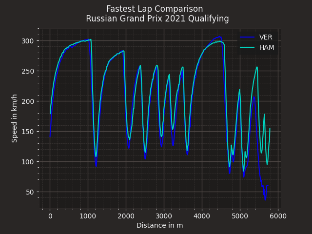

Note
Click here to download the full example code
Overlaying speed traces of two laps¶
Compare two fastest laps by overlaying their speed traces.
import matplotlib.pyplot as plt
import fastf1.plotting
fastf1.Cache.enable_cache('../doc_cache') # replace with your cache directory
# enable some matplotlib patches for plotting timedelta values and load
# FastF1's default color scheme
fastf1.plotting.setup_mpl()
# load a session and its telemetry data
quali = fastf1.get_session(2021, 'Spanish Grand Prix', 'Q')
laps = quali.load_laps(with_telemetry=True)
First, we select the two laps that we want to compare
ver_lap = laps.pick_driver('VER').pick_fastest()
ham_lap = laps.pick_driver('HAM').pick_fastest()
Next we get the telemetry data for each lap. We also add a ‘Distance’ column to the telemetry dataframe as this makes it easier to compare the laps.
ver_tel = ver_lap.get_car_data().add_distance()
ham_tel = ham_lap.get_car_data().add_distance()
Finally, we create a plot and plot both speed traces. We color the individual lines with the driver’s team colors.
rbr_color = fastf1.plotting.team_color('RBR')
mer_color = fastf1.plotting.team_color('MER')
fig, ax = plt.subplots()
ax.plot(ver_tel['Distance'], ver_tel['Speed'], color=rbr_color, label='VER')
ax.plot(ham_tel['Distance'], ham_tel['Speed'], color=mer_color, label='HAM')
ax.set_xlabel('Distance in m')
ax.set_ylabel('Speed in km/h')
ax.legend()
plt.suptitle(f"Fastest Lap Comparison \n "
f"{quali.event.name} {quali.event.year} Qualifying")
plt.show()

Out:
C:\Dateien\Code\Formula1\Fast-F1\fastf1\events.py:351: UserWarning: The `Weekend.name` property is deprecated and will beremoved in a future version.
Use `Event['eventName']` or `Event.eventName` instead.
warnings.warn(
Total running time of the script: ( 0 minutes 1.801 seconds)